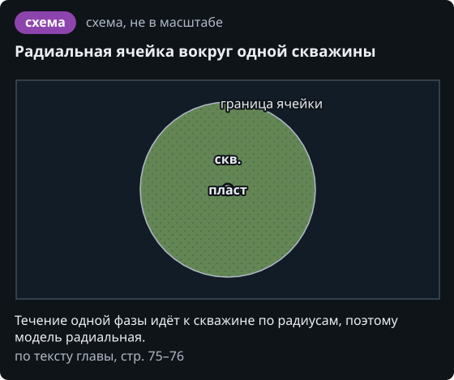

Часть 1. 5.2 Derivation of the basic radial differential equation
Радиальный приток и его допущения
В книге: 5.1 Introduction; 5.2 Derivation of the basic radial differential equation (начало) · стр. 75–76
Суть
Приток к скважине моделируют радиально в однородном пласте с одним флюидом. Так строят решения для притока и испытаний скважин. Модель опирается на однородность, изотропность, полное вскрытие пласта и один флюид. стр. 75–76 · пояснение ИИ
Почему сейчас. Это отправная точка: без модели и её допущений уравнения дальше не читаются.
Как это работает
Автор выводит базовое уравнение для радиального течения одного флюида в однородной пористой среде. Уравнение строят в радиальной форме, чтобы моделировать течение вблизи скважины. Аналитические решения затем применяют к испытаниям и притоку к скважине. стр. 75 · пояснение ИИ
Цитаты автора: 2
Наблюдение Базовое уравнение выведено для радиального течения флюида в однородной пористой среде.
In this chapter the basic equation for the radial flow of a fluid in a homogeneous porous medium is derived as стр. 75 · из книги
Наблюдение Аналитические решения нужны для описания испытаний скважин и их притока.
Analytical solutions of the equation can then be obtained under various boundary and initial conditions for use in the description of well testing and well inflow стр. 75 · из книги
Уравнение 5.1 задаёт радиальный поток через коэффициент k ρ/μ и изменение давления во времени. стр. 75 · пояснение ИИ
Первые допущения: пласт однороден по свойствам породы и изотропен по проницаемости. стр. 75, 76 · пояснение ИИ
Цитаты автора: 1
Допущение Пласт однороден по свойствам породы и изотропен по проницаемости.
The reservoir is considered homogeneous in all rock properties and isotropic with respect to permeability. стр. 75 · из книги
Скважина вскрывает всю толщину пласта, поэтому течение полностью радиальное. Пласт полностью насыщен одним флюидом. стр. 75, 76 · пояснение ИИ
Цитаты автора: 2
Допущение Скважина вскрывает всю толщину пласта, что даёт полностью радиальное течение.
The producing well is completed across the entire formation thickness thus ensuring fully radial flow. стр. 75 · из книги
Допущение Пласт полностью насыщен одним флюидом.
The formation is completely saturated with a single fluid. стр. 76 · из книги
Геометрия радиальной ячейки показана на рис. 5.1. Рисунок изображает одну фазу у добывающей скважины. стр. 75, 76 · пояснение ИИ
- Рисунок 5.1 показывает радиальное течение одной фазы вблизи добывающей скважины. стр. 76 · из книги
Цитата автора
Fig. 5.1 Radial flow of a single phase fluid in the vicinity of a producing well. стр. 76 · из книги
Цитаты автора: 1
Наблюдение Геометрия радиальной ячейки показана на рисунке 5.1.
The radial cell geometry is shown in fig. 5.1 стр. 75 · из книги
Уравнение нелинейно, потому что коэффициенты с обеих сторон зависят от давления. Для аналитических решений его сначала линеаризуют, чтобы коэффициенты почти не зависели от давления. Приближённая линеаризация для жидкости дана в конце главы, решения разобраны в главах 6 и 7. Для реального газа нужна более сложная линеаризация интегральным преобразованием, гл. 8. стр. 75 · пояснение ИИ
Рисунок

На практике
Специалист берёт радиальную форму для расчёта притока к скважине и интерпретации испытаний. стр. 75 · пояснение ИИ
Где здесь ручной труд специалиста
- Вход
- Входные данные: однородность и изотропность пласта, полное вскрытие, один флюид.
- Ручные шаги
- Ручные шаги: в главе не указано.
- Точки суждения
- Точки суждения: проверить, выполняются ли допущения для конкретного пласта. Автор не утверждает, что они выполняются всегда.
- Время
- Время: в главе не указано.
- Типичные ошибки
- Типичные ошибки: считать допущения выполненными в любом пласте. Не учесть нарушение однородности или изотропности.
Цифры и условия
Числовых порогов в узле нет. Условия применимости: однородность, изотропность, полное вскрытие и один флюид. стр. 75, 76 · пояснение ИИ
Допущения вводят вначале, как упрощения. Автор не говорит, что они выполняются в любом пласте. стр. 75 · пояснение ИИ
- Допущения вводятся в начале как упрощения для вывода уравнения. стр. 75 · из книги
Цитата автора
initially the following simplifying assumptions will be made стр. 75 · из книги
Однородность и изотропность реального пласта могут нарушаться. Тогда радиальная модель даёт приближение. стр. 75, 76 · гипотеза
Сноска 9 указывает книгу Amyx, Bass и Whiting, 1960, о физических свойствах пластов. стр. 75 · пояснение ИИ
Сноска 10 указывает серию статей Herbeck, Heintz и Hastings, 1976, о третичных методах нефтеотдачи. стр. 75 · пояснение ИИ
Формулы
Базовое уравнение радиального течения: слева радиальный поток через коэффициент k ρ/μ, справа накопление за счёт сжимаемости. стр. 75 · из книги
| Обозначение | Что это | Единица |
|---|---|---|
| k | проницаемость пласта | |
| \rho | плотность флюида | |
| \mu | вязкость флюида | |
| r | радиальная координата от оси скважины | |
| p | давление | |
| t | время | |
| \phi | пористость | |
| c | сжимаемость |
Новые понятия
- радиальный приток radial flow
- Течение флюида к скважине, где линии тока направлены к оси скважины по радиусу.
- однородный изотропный пласт homogeneous isotropic reservoir
- Пласт, у которого свойства породы одинаковы во всех точках, а проницаемость не зависит от направления.
- полностью вскрытый пласт fully penetrating well
- Скважина, перфорированная или открытая на всю толщину пласта, что обеспечивает радиальное течение.
- линеаризация Linearization
- Упрощение нелинейного уравнения, при котором коэффициенты перестают зависеть от искомой величины.
Что это значит для данных
Из главы. Радиальные решения применимы к притоку, если пласт однороден, изотропен, вскрыт полностью и заполнен одним флюидом.
Где правило ломается. Если скважина вскрыла часть толщины пласта, течение не радиальное, и радиальная модель даст искажённую кривую давления.
гипотеза Если кривая давления не ложится на радиальную модель, причина может быть в неоднородности пласта.
гипотеза Отклонение от модели может быть вызвано частичным вскрытием или несколькими флюидами в пласте.
Аналогия из ИТ. Радиальный приток похож на диффузионное сглаживание по сетке: возмущение расходится от центра к периферии. внешнее
Где она перестаёт работать. Возмущение распространяется диффузионно, а не со скоростью сигнала. Сетка при этом не моделирует неоднородность пласта, которой в модели нет.
Глубже
Автор ставит радиальную форму выше декартовой, так как полевые инженеры редко используют декартовы аналитические решения. стр. 75 · пояснение ИИ
Цитаты автора: 1
Наблюдение Автор считает радиальный вывод важнее декартова, так как декартовы аналитические решения редко используют полевые инженеры.
This is considered of greater importance than deriving the basic equation in cartesian coordinates since analytical solutions of the latter are seldom used in practice by field engineers. стр. 75 · из книги
В численном моделировании пласта чаще берут декартову геометрию. Приток к скважине всё равно описывают радиальными уравнениями. стр. 75 · пояснение ИИ
Цитаты автора: 1
Наблюдение Даже в численном моделировании приток к скважине описывают радиальными уравнениями.
even in this case the flow into or out of a well is controlled by equations expressed in radial form стр. 75 · из книги
Задания
Почему в модели радиального притока течение считают полностью радиальным?
Какие допущения лежат в основе базового уравнения радиального притока?
Пометки к тексту книги: 1
- стр. 76: Рис. 5.1: радиальная ячейка и течение у скважины. Геометрия в тексте не воспроизведена, сверить с рисунком.